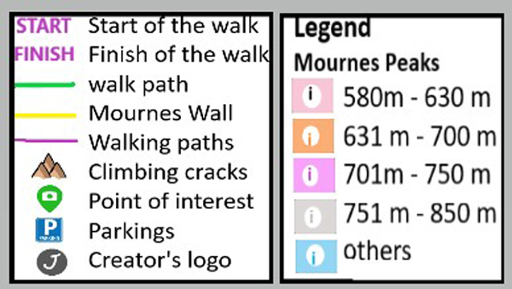
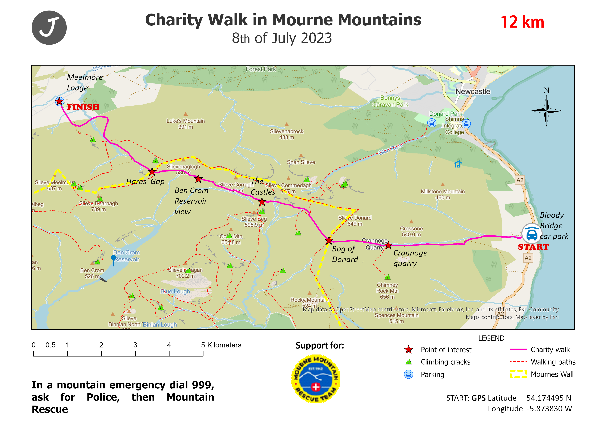
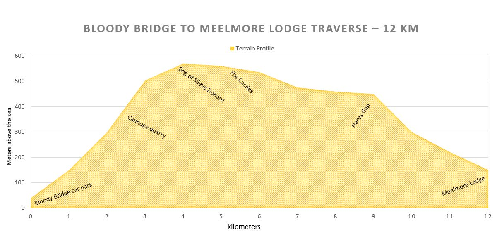

12 km Charity Walk
Discover Mourne Mountain beauty and support local rescue team!
Donate
Map
Schedule
Home
Map of the walking area:
Legend

Print or save this map before the walk:

Profile of the walk:

See the walk on Google MyMap:
Home /
Schedule /
Map /
Donate
Contact and Booking - email us
©Jana.Robbins